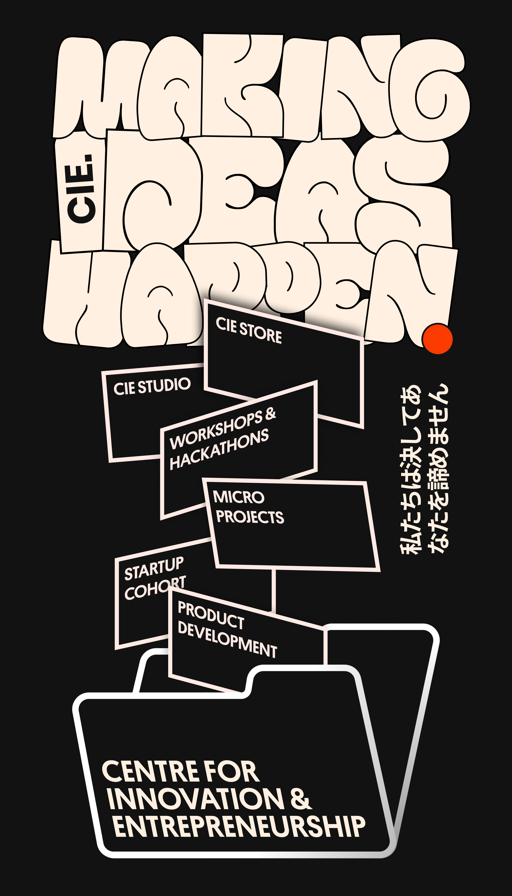
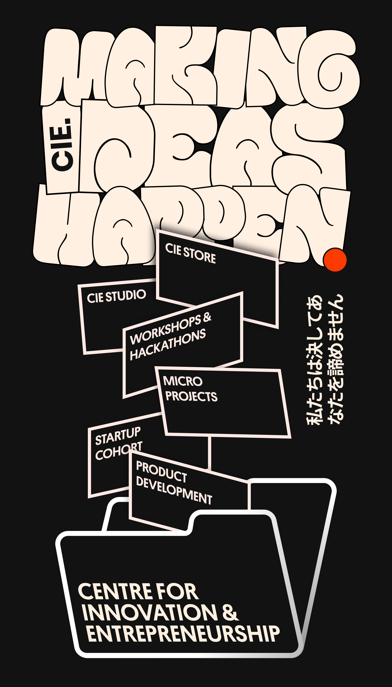
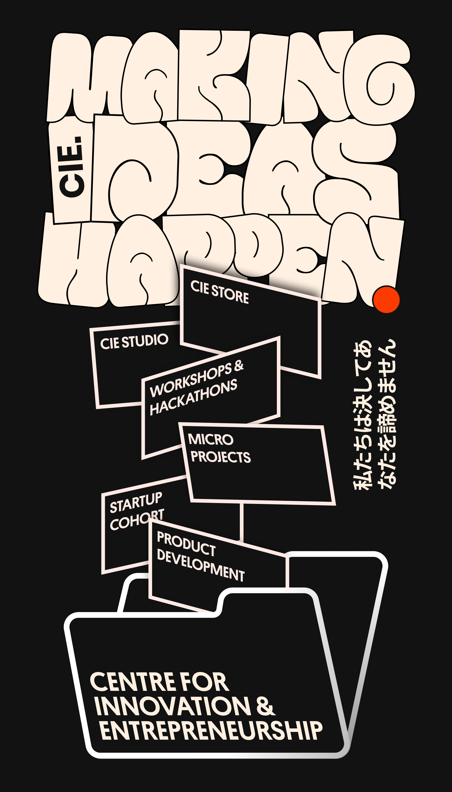

height="0.56" material="shader: flat; src: #right-video; transparent: true; opacity: 0; repeat: 1.6 1.6; offset: -0.30 -0.15" animation__in="property: material.opacity; from: 0; to: 1; dur: 600; easing: easeOutCubic; startEvents: show">


 
height="0.56"
material="shader: flat; src: #right-video; transparent: true; opacity: 0; repeat: 1.6 1.6; offset: -0.30 -0.15"
animation__in="property: material.opacity; from: 0; to: 1; dur: 600; easing: easeOutCubic; startEvents: show">

height="0.56"
material="shader: flat; src: #right-video; transparent: true; opacity: 0; repeat: 1.6 1.6; offset: -0.30 -0.15"
animation__in="property: material.opacity; from: 0; to: 1; dur: 600; easing: easeOutCubic; startEvents: show">